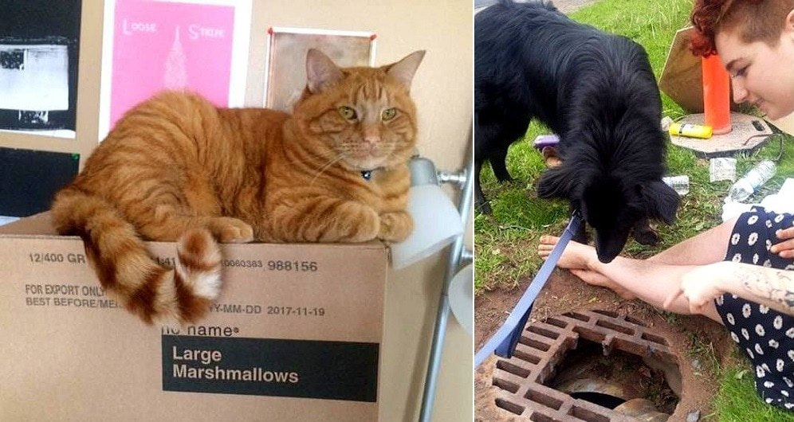

Hero Dog Finds Cat Missing for Weeks Without a Trace

A New Brunswick cat named Ghost escaped when his family moved and had been missing for six weeks, worrying his mom something terrible. But when a dog named Cashew was out on a walk with his mom, he found Ghost in the sewer and refused to move until someone helped!
Shelly Collette was walking Cash in Sackville, NB when he stopped dead in his tracks and wouldn’t budge. The border collie/Lab mix was standing over a manhole, so Shelly peered down through the grate and saw an orange tabby trapped below.
“We were on a walk, and Cash suddenly stopped and wouldn’t move,” Shelly told the
Sackville Tribune-Post. “I looked down, and thought, ‘Holy crow! That’s that missing cat!’”

“I had never met Ghost, but I had seen the missing cat signs around town,” she told
Metro. “Cash was very intrigued and refused to leave. He wanted to save this cat.”
Shelly called Ghost’s mom, Izzy Francolini, who arrived as soon as she could.
“I was at work and I jumped up and my boss was super lovely and just told me to get him,” said Izzy, who’s employed by a hand-dyed yarn company.

She called municipal workers to lift the manhole cover, but it was so rusted that sledgehammers were required to smash it open.
“The one guy couldn’t get it open on his own so five other guys showed up and they had three sledgehammers going,” she explained.
She knew all the commotion would have scared Ghost away, so she set up camp for herself, hoping he’d come back soon.

“Someone came and gave me a blanket so I made a little blanket fort basically. Every so often friends and strangers came and went. A neighbor charged my phone for me,” Izzy said. Two people brought me dinner. A lady gave me five bottles of water. It was incredible. It was mind-blowing and heart-warming.”
After six hours, Ghost still hadn’t made a reappearance, so she made the decision to go home. Three hours later, a friend called to say they had walked past the site and heard meowing. This time Izzy came armed with food to lure him out, and it worked.
“I grabbed him by the scruff of his neck and took him home,” she said.

Ghost had lost about three pounds and had a couple of ticks on him, but was in otherwise good shape. Izzy said that if it hadn’t been for Cashew, Ghost might never have been found. The kitty was aptly named, as he’s known for being elusive. He once found himself lodged in a wall and it took nearly a month to capture him.
“I love that dog dearly,” Izzy said, laughing.
Shelly says that though Cash is “a goofy dog,” he is a marvelous tracker. One time he led her to a dead deer in the middle of the woods, and another time was able to find his way out of a corn maze.